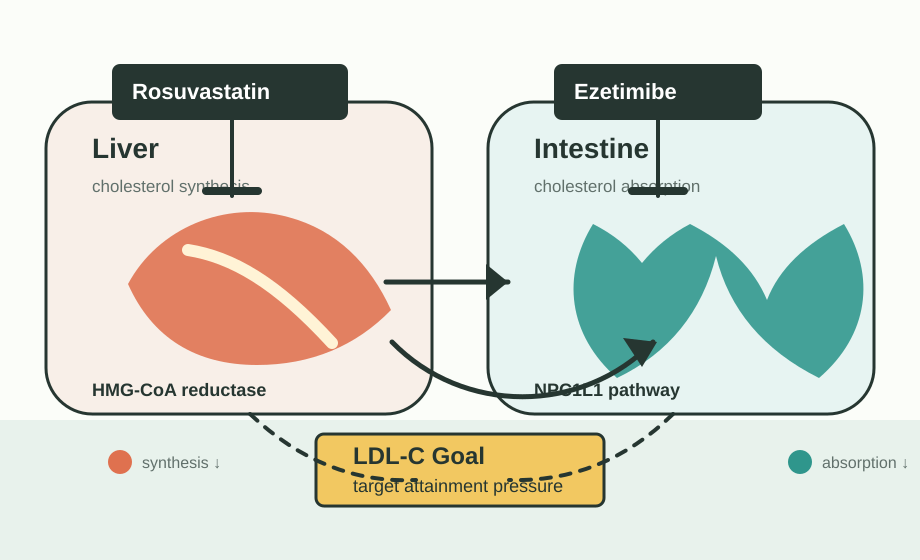

Private Study Access
CVD Learning Login
로수젯과 이상지질혈증 학습 콘솔에 접근하려면 계정을 입력한다.
Private Study Access
로수젯과 이상지질혈증 학습 콘솔에 접근하려면 계정을 입력한다.
로수젯 / Rosuzet
질환 목표, 국내외 지침, 로수젯 제품 프로파일, WHO ATC와 EPHMRA 시장분류, 핵심 임상근거를 한 화면 흐름으로 연결한다.

rosuvastatin and ezetimibe
EPHMRA/Intellus 조합 지질조절제
2023-05-22 수정본, 2026년판 준비 공지
ASCVD 3년 outcome strategy
Workbench Map
Segment Playbook
Cardiology, Endocrinology, Neurology, Nephrology, Primary care를 서로 다른 환자·근거·가드레일로 분리한다.
Disease Definition
첫 학습은 질환명을 외우는 것이 아니라 LDL-C, non-HDL-C, TG, HDL-C 조합과 위험도 연결을 구분하는 것이다.
Statin MOA
HMG-CoA reductase 억제에서 LDL receptor 증가, 혈중 LDL-C clearance, ezetimibe 보완 기전까지 한 흐름으로 본다.
Statin Profiles
KSoLA 지침의 성분별 특성 표를 PM 학습용으로 풀어 성분별 대사, 반감기, 오리지널, 대표 보험상한가를 비교한다.
KSoLA Fact Sheet
KSoLA 2024 Fact Sheet를 시장 크기, 진단-치료-조절 funnel, 동반질환 segment로 해석한다.
KSoLA · ESC/EAS · ACC/AHA · ADA
국내 실무는 KSoLA를 중심에 두고, ESC/EAS와 ACC/AHA는 글로벌 메시지와 evidence framing을 보강하는 축으로 읽는다.
Target Matrix
KSoLA를 국내 실행 기준으로 두고, ESC/EAS와 ACC/AHA의 target language를 나란히 본다.
Target Pressure
baseline LDL-C와 위험군 목표를 넣어 목표 도달에 필요한 감소폭을 계산한다.
Strategy Simulator
baseline, target, 현재 치료를 기준으로 statin 증량, 로수젯 용량, injectable add-on의 예상 위치를 비교한다.
Patient Archetypes
위험군, baseline LDL-C, 현재 치료를 조합해 PM 학습 관점을 만든다.
Product Core
허가사항 안에서 성분, 용량, 기전, 안전성 주의, 세그먼트별 활용 질문을 정리한다.
Dose Positioning
용량은 숫자가 아니라 환자 세그먼트, LDL-C gap, 근거, claim guardrail의 조합으로 학습한다.
Classification
WHO ATC와 EPHMRA/Intellus 시장분류를 분리해서 학습한다.
Market Map
동일성분, statin+ezetimibe class, injectable/nonstatin, TG 중심 치료제를 다른 질문으로 분리한다.
Competitor War Room
동일성분 FDC, 다른 statin+ezetimibe, 주사제, bempedoic acid, TG 치료제를 threat와 response로 나눠 본다.
Guideline Diff Engine
KSoLA, ESC/EAS, ACC/AHA 문장을 PM 메시지 영향 기준으로 비교한다.
Evidence Ladder
근거는 mechanism, lipid efficacy, outcome, real-world 순서로 계층화한다.
PICO Drill
논문을 field message로 바꾸기 전 PICO, limitation, PM message를 분리한다.
Direct Evidence Deep Dive
EROICA, REMBRANDT, SWITCH, ROSETTA-Stroke, RACING subgroup처럼 제품/전략 메시지에 가까운 연구를 claim guardrail과 함께 본다.
Landmark Trials
RACING, PROVE-IT, IDEAL, CARE, LIPID, 4S, TNT, HPS, ASCOT, AFCAPS/TexCAPS, WOSCOPS, HOPE-3, EWTOPIA 75, IMPROVE-IT을 별도 축으로 학습한다.
Evidence Quality Grading
브랜드 직접성, 연구 디자인, outcome 여부, 한국/아시아 관련성, limitation을 점수화한다.
Evidence Atlas
로수젯 직접 연구, rosuvastatin+ezetimibe 전략, statin primary/secondary prevention, intensive strategy, safety, PCSK9, bempedoic acid, TG residual risk, 국내 역학을 한 번에 검색한다.
Claim Guardrail
말해도 되는 표현, 신중한 표현, 피해야 할 표현을 구분해 교육자료 리스크를 줄인다.
Claim Builder
초안 문장을 입력하면 allowed, cautious, avoid 기준으로 판정하고 더 안전한 표현 방향을 제시한다.
Field Response
현장에서 자주 나오는 질문을 근거, 답변 구조, 금지 claim으로 나눠 훈련한다.
Objection Training
고강도 statin, 제네릭, TG, PCSK9, EROICA outcome claim 같은 질문을 짧은 카드로 반복 훈련한다.
Market Sizing
국내 이상지질혈증 pool에서 진단, 치료, statin 단독 목표 미달, 로수젯 목표 share를 단계별로 추정한다.
Publication Tracker
EROICA, REMBRANDT, EASY-ROSUZET, SWITCH, KSoLA 2026 등 업데이트가 필요한 근거자산을 추적한다.
Monthly PM Brief
지침, 근거, 현장 반론, 시장 신호, claim hygiene, 다음 액션을 한 화면으로 압축한다.
Update Watch
2026년판 진료지침과 신규 치료 옵션이 나오면 무엇을 업데이트할지 미리 정한다.
Learning Path
한 주에 하나의 질문만 깊게 파고, 마지막 주에 field execution으로 묶는다.
Deep Library
지질 생물학, 위험도, 지침 workflow, 약물치료, 안전성, 시장, field execution, 논문 독해, 용어를 PM 학습 단위로 잘게 나눠 검색한다.
PM Self Check
지침, ATC, 제품, 임상근거를 PM 언어로 설명할 수 있는지 확인한다.